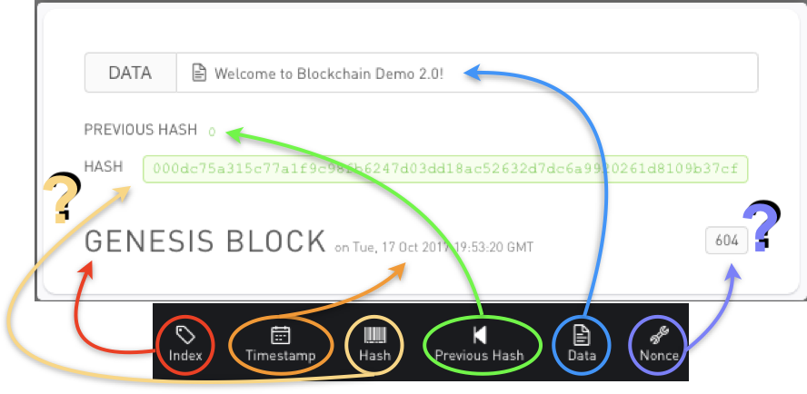
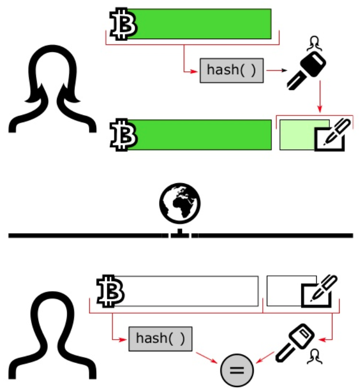

The Blockchain:
an overview
Università di Modena e Reggio Emilia
Outline
- Why
- What
- How
- Autonomy, too?
Why the blockchain?

Industrial perspective
- prominent use case: cryptocurrency
- money is the asset to keep track of
- identity management is crucial
- digital ledger
- encryption
- state machine replication
Way of dealing, essentially, with distributed asset tracking / identity management
A combination of distinct, already existing technologies
Research perspective
What can the blockchain do for distributed computing?
Consensus, fault tolerance, smart contracts, ...
Ethereum as the reference blockchain
What really is a blockchain?
BLOCKCHAIN $\neq$ BITCOIN
The Blockchain is a general concept describing a model for distributed & decentralised computation, that may be implemented in a variety of ways, within heterogeneous application domains, and with disparate goals
Bitcoin [Nakamoto, 2008] is one specific implementation, in one specific application domain (cryptocurrencies), with a set of specific goals (drop the bank system)
The blockchain at a glance
- P2P distributed ledger: shared, transparent, append-only registry of transactions
- Secure: hash functions, digital signatures, ...
- Replicated: no need for a trusted centralized authority
- Consensus-based: updates approved and propagated against Byzantine failures
Transactions
- is validated by peers
- if valid becomes permanent and immutable
- hash must certify transaction integrity
- signature must match issuer identity
- issuer's balance must be sufficient
A change of state in the blockchain: e.g. money transfer (in Bitcoin)
Once a transaction occurs, a block is created and
Validity:
Blocks
Unit of information in the blockchain
If a change is to be made, no block is altered or rewritten, a new one is created, instead, and chained (block-chain)
Hash
- same data always maps to same hash
- different data $\approx$always maps to a different hash
- easy to compute hash from data
- infeasible to compute data from hash
- increasing $N$ raises hasing difficulty $$block\_hash = f(index, timestamp, prev\_hash, data, nonce)$$
In general, alphanumeric string with some properties:
In blockchain, valid hash must have additional properties, e.g. $N$ of leading zeroes
Mining blocks
- as difficulty increases, $M$ of valid hashes decreases
- with lower $M$, it takes more processing power / time to find a valid hash
- miners are the ones who find the nonce, hence write blockchain history (the blocks)
- thus can harm the system, too, either by mistake or maliciously (lying)!
Finding a nonce (number) which produces a desired hash, to commit the block
"With great powers come great responsibilities"
Signature
Cryptographic tool to guarantee:
- integrity = info uncompromised
- authenticity = info comes from that user
- data hashed by user $U$ with private key $K$
- data sent to user $U'$ along with $U$ public key $P$
- $U'$ decodes data using $P$
Consensus
- all nodes must be initialised with the same initial state
- inputs must be submitted to all replicas in the same order
- consistency: propagation of updates
- robustness: tolerance to nodes' failures
The blockchain is made of networked nodes executing the same state machine ($\approx$program)
Each node executes the same consensus protocol
Consensus guarantees
How does a blockchain work?
Is autonomy involved?
Thanks
for your attention
Questions?
Università di Modena e Reggio Emilia